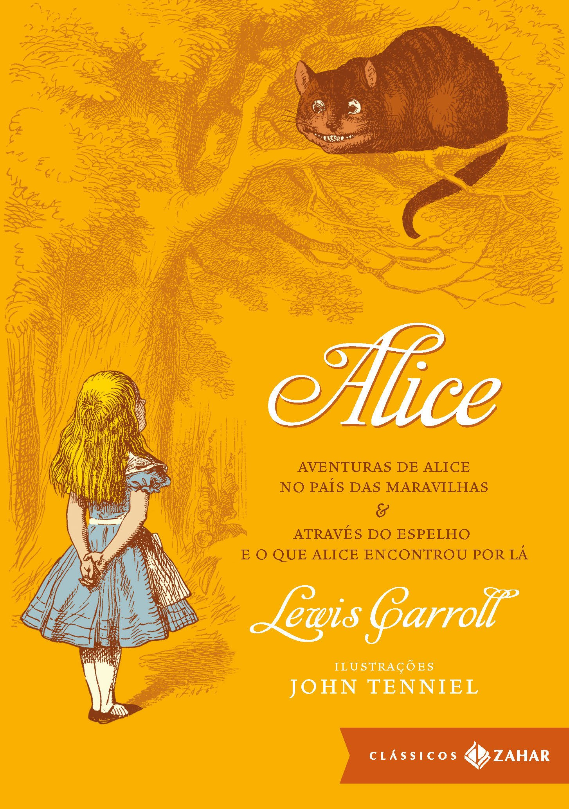

Estante de livros
Sua biblioteca à um clique de distância
Harry Potter e a Pedra Filosofal

Sinopse
Harry Potter nunca tinha ouvido falar em Hogwarts até o momento em que as CARTAS começam a aparecer no
capacho do número 4 da rua dos Alfeneiros. Endereçadas com um LACRE PÚRPURA, elas são repidamente
confiscadas por seus tios TERRÍVEIS. E então, no décimo primeiro aniversário de Harry, um homem GIGANTESCO
com olhos luzindo como besouros negros chamado RÚBEO HAGRID entra intempestivamente com uma notícia
ASSOMBROSA: Harry Potter é um bruxo e tem uma vaga na ESCOLA DE MAGIA E BRUXARIA DE HOGWARTS. Uma aventura
inacreditável está para começar!
Fonte: Google Books
| Data da primeira publição |
Autor |
Idioma Original |
Gêneros |
| 26 de junho de 1997 |
J. K. Rowling |
Inglês |
Romance, Literatura infantil, Alta fantasia |
O Senhor dos Anéis: A Sociedade do Anel

Sinopse
A Sociedade do Anel O volume inicial de O Senhor dos Anéis, lançado originalmente em julho de 1954, foi o
primeiro grande épico de fantasia moderno, conquistando milhões de leitores e se tornando o padrão de
referência para todas as outras obras do gênero até hoje. A imaginação prodigiosa de J.R.R. Tolkien e seu
conhecimento profundo das antigas mitologias da Europa permitiram que ele criasse um universo tão complexo e
convincente quanto o mundo real. A Sociedade do Anel começa no Condado, a região rural do oeste da
Terra-média onde vivem os diminutos e pacatos hobbits. Bilbo Bolseiro, um dos raros aventureiros desse povo,
cujas peripécias foram contadas em O Hobbit, resolve ir embora do Condado e deixa sua considerável herança
nas mãos de seu jovem parente Frodo. O mais importante legado de Bilbo é o anel mágico que costumava usar
para se tornar invisível. No entanto, o mago Gandalf, companheiro de aventuras do velho hobbit, revela a
Frodo que o objeto é o Um Anel, a raiz do poder demoníaco de Sauron, o Senhor Sombrio, que deseja escravizar
todos os povos da Terra-média. A única maneira de eliminar a ameaça de Sauron é destruir o Um Anel nas
entranhas da própria montanha de fogo onde foi forjado. A revelação faz com que Frodo e seus companheiros
hobbits Sam, Merry e Pippin deixem a segurança do Condado e iniciem uma perigosa jornada rumo ao leste. Ao
lado de representantes dos outros Povos Livres que resistem ao Senhor Sombrio, eles formam a Sociedade do
Anel. Alguém uma vez disse que o mundo dos leitores de língua inglesa se divide entre os que já leram O
Senhor dos Anéis e os que um dia lerão o livro. Com esta nova tradução da obra, o fascínio dessa aventura
atemporal ficará ainda mais evidente para os leitores brasileiros, tanto os que já conhecem a saga como os
que estão prestes a descobrir seu encanto.
Fonte: Google Books
| Data da primeira publição |
Autor |
Idioma Original |
Gêneros |
| 29 de julho de 1954 |
J.R.R. Tolkien |
Inglês |
Literatura fantástica |
Percy Jackson e o Ladrão de Raios

Sinopse
Primeiro volume da saga Percy Jackson e os olimpianos, O ladrão de raios esteve entre os primeiros lugares na
lista das séries mais vendidas do The New York Times. O autor conjuga lendas da mitologia grega com
aventuras no século XXI. Nelas, os deuses do Olimpo continuam vivos, ainda se apaixonam por mortais e geram
filhos metade deuses, metade humanos, como os heróis da Grécia antiga. Marcados pelo destino, eles
dificilmente passam da adolescência. Poucos conseguem descobrir sua identidade. O garoto-problema Percy
Jackson é um deles. Tem experiências estranhas em que deuses e monstros mitológicos parecem saltar das
páginas dos livros direto para a sua vida. Pior que isso: algumas dessas criaturas estão bastante irritadas.
Um artefato precioso foi roubado do Monte Olimpo e Percy é o principal suspeito. Para restaurar a paz, ele e
seus amigos – jovens heróis modernos – terão de fazer mais do que capturar o verdadeiro ladrão: precisam
elucidar uma traição mais ameaçadora que fúria dos deuses.
Fonte: Google Books
| Data da primeira publição |
Autor |
Idioma Original |
Gêneros |
| 28 de junho de 2005 |
Rick Riordan |
Inglês |
Mitologia grega, Romance, Ficção juvenil |
Alice no País das Maravilhas

Sinopse
Você poderia me dizer, por favor, qual caminho eu devo seguir a partir daqui?'
Que esta pergunta seja feita por uma garotinha perdida de casa (após ter seguido um coelho falante até sua
toca) a uma espécie de gato fantasmagórico flutuante já não causa nenhuma estranheza quando chegamos na tal
parte da história, pois como nos alertou a própria menina: 'há tanta coisa estranha acontecendo aqui que eu
já não me surpreendo com mais nada'.
Com este conto surreal e fantástico, muitas vezes sem sentido algum, noutras vezes carregado de sentido
oculto e profundo, Lewis Carroll revolucionou para sempre a literatura infantil, praticamente a refundando
(não surpreende que encontremos algo do seu estilo em Antoine de Saint-Exupéry e Monteiro Lobato). É aqui
que conheceremos célebres personagens como o Coelho Branco, o Chapeleiro Louco e o Gato de Cheshire. É aqui
que veremos, quem sabe, a primeira descrição genuína dos sonhos infantis. É aqui que celebraremos toda a
magia da boa literatura - esta que não morre nunca.
Incontáveis peças de teatro, filmes e livros secundários foram criados por conta desta obra preciosa, mas
nada substituí ler o original; ainda mais quando se trata da tradução de um de nossos maiores escritores,
Monteiro Lobato, numa edição recheada com as clássicas ilustrações de John Tenniel e Arthur Rackham.
Bem-vindo ao País das Maravilhas!
Fonte: Google Books
| Data da primeira publição |
Autor |
Idioma Original |
Gêneros |
| novembro de 1865 |
Lewis Carroll |
Inglês |
Literatura infantil, Literatura fantástica, Drama |
O Guia do Mochileiro das Galáxias

Sinopse
Considerado um dos maiores clássicos da literatura de ficção científica, O Guia do Mochileiro das Galáxias
vem encantando gerações de leitores ao redor do mundo com seu humor afiado.
Este é o primeiro título da famosa série escrita por Douglas Adams, que conta as aventuras espaciais do
inglês Arthur Dent e de seu amigo Ford Prefect.
A dupla escapa da destruição da Terra pegando carona numa nave alienígena, graças aos conhecimentos de
Prefect, um E.T. que vivia disfarçado de ator desempregado enquanto fazia pesquisa de campo para a nova
edição do Guia do Mochileiro das Galáxias, o melhor guia de viagens interplanetário.
Mestre da sátira, Douglas Adams cria personagens inesquecíveis e situações mirabolantes para debochar da
burocracia, dos políticos, da "alta cultura" e de diversas instituições atuais. Seu livro, que trata em
última instância da busca do sentido da vida, não só diverte como também faz pensar.
Fonte: Google Books
| Data da primeira publição |
Autor |
Idioma Original |
Gêneros |
| 12 de outubro de 1979 |
Douglas Adams |
Inglês |
Ficção científica, Romance, Humor |
Código Limpo
Sinopse
Mesmo um código ruim pode funcionar. Mas se ele não for limpo, pode acabar com uma empresa de
desenvolvimento. Perdem-se a cada ano horas incontáveis e recursos importantes devido a um código mal
escrito. Mas não precisa ser assim. O renomado especialista em software, Robert C. Martin, apresenta um
paradigma revolucionário com Código limpo: Habilidades Práticas do Agile Software. Martin se reuniou com
seus colegas do Mentor Object para destilar suas melhores e mais ágeis práticas de limpar códigos
"dinamicamente" em um livro que introduzirá gradualmente dentro de você os valores da habilidade de um
profissional de softwares e lhe tornar um programador melhor –mas só se você praticar. Que tipo de trabalho
você fará? Você lerá códigos aqui, muitos códigos. E você deverá descobrir o que está correto e errado nos
códigos. E, o mais importante, você terá de reavaliar seus valores profissionais e seu comprometimento com o
seu ofício. Código limpo está divido em três partes. Na primeira há diversos capítulos que descrevem os
princípios, padrões e práticas para criar um código limpo. A segunda parte consiste em diversos casos de
estudo de complexidade cada vez maior. Cada um é um exercício para limpar um código – transformar o código
base que possui alguns problemas em um melhor e eficiente. A terceira parte é a compensação: um único
capítulo com uma lista de heurísticas e "odores" reunidos durante a criação dos estudos de caso. O resultado
será um conhecimento base que descreve a forma como pensamos quando criamos, lemos e limpamos um código.
Após ler este livro os leitores saberão: ✔ Como distinguir um código bom de um ruim ✔ Como escrever códigos
bons e como transformar um ruim em um bom ✔ Como criar bons nomes, boas funções, bons objetos e boas classes
✔ Como formatar o código para ter uma legibilidade máxima ✔ Como implementar completamente o tratamento de
erro sem obscurecer a lógica ✔ Como aplicar testes de unidade e praticar o desenvolvimento dirigido a testes
Este livro é essencial para qualquer desenvolvedor, engenheiro de software, gerente de projeto, líder de
equipes ou analistas de sistemas com interesse em construir códigos melhores.
Fonte: Google Books
| Data da primeira publição |
Autor |
Idioma Original |
Gêneros |
| 1 de agosto de 2008 |
Robert C. Martin |
Inglês |
Tecnologia, Informática |